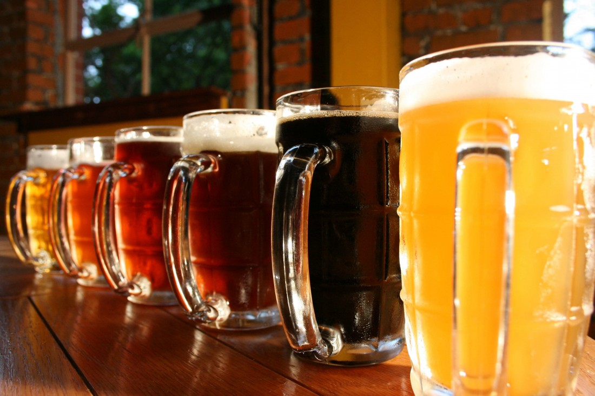

Если вы являетесь настоящим ценителем пива, вам, наверное, известно о том, что во многих странах существуют клубы, партии и даже праздники, посвященные этому освежающему пенистому напитку. Действительно, пиво является напитком, который пользуется уважением во всем и пьется с великим удовольствием. Его поклонники могут спорить о том, какой сорт лучше и в какой стране пиво отличается более высоким качеством, но все они сходятся в одном — без пива жизнь скучна и совсем не интересна. Для того чтобы разобраться, почему пиво так любимо и популярно, давайте отправимся на экскурсию по галерее, которая представлена ничем иным, как различными сортами пива. Итак, начнем нашу предварительную дегустацию, которую вы сможете продолжить самостоятельно — будучи настоящими знатоками всех тонкостей вкуса и производства пенистого пива.
Вы, наверное, уже обратили внимание на то, что телевизионная реклама просто изобилует демонстрацией и представлением различных сортов пива. Многие из них не были известны нашему потребителю, но вот некоторые уже успели завоевать любовь и уважение по всей стране.
Даже если вы относитесь к неискушенным пивоманам и мало разбираетесь в тонкостях производства пива, все же, наверное, обращали внимание на то, что этот напиток может иметь различные оттенки — от нежно-светлого до жгуче-темного. Пиво отличается не только цветом (и, лучше сказать, не столько цветом), но и вкусом.
Действительно, сорта пива отличаются по цвету и способу обработки. Светлое пиво имеет золотисто-желтую окраску различных оттенков. Темное пиво можно узнать по насыщенному коричневому цвету. Уже при первом знакомстве с этим напитком вы заметите, что светлое и темное пиво имеют разные привкусы. Это действительно так. И сейчас я постараюсь объяснить, от чего это зависит.
Когда вы пьете светлое пиво, вы чувствуете привкус хмеля. Вкус темного пива более сложный. Основным является привкус солода, но многие сорта темного пива имеют к тому же специфический сладковатый вкус.
Каждый сорт светлого и темного пива имеет свои особенности в запахе и во вкусе, а также отличается крепостью и продолжительностью выдержки до момента розлива.
Итак, перечислим некоторые сорта светлого пива (назвать все существующие марки просто невозможно). Несомненно, что в России на протяжении многих лет самым популярным являлось и продолжает являться пиво «Жигулевское». Этот напиток имеет крепость 2,8 %, отличается светло-золотистым цветом и слабо выраженным привкусом хмеля.
К не менее любимым сортам светлого пива относят: «Рижское», «Московское», «Ленинградское», «Балтика», «Красный Восток», «Ярпиво», «Ячменный Колос», «Российское», «Славянское», «Столичное». Среди «старожилов» темных сортов пива выделяются — «Мартовское», «Бархатное», «Портер», «Карамельное», «Тверское темное», «Украинское». Особой любовью и популярностью пользуются многие сорта темного и светлого пива, имеющие фирменные наименования и появившиеся в нашей жизни совсем недавно. К ним относится пиво как отечественного, так и импортного производства.
Поговорим немного о сортах-долгожителях. Ленинградское пиво всегда считалось одним из крепких. Оно содержит 6 % спирта. Это светлый алкогольный напиток, который покоряет приятный привкусом хмеля. Этот же привкус имеют «Рижское» и «Московское» пиво. Это светлые сорта пива, крепость которых практически одинакова: «Рижское» — 3,4 %, «Московское» — 3,5 %.
Среди женщин большой популярностью пользуется «Карамельное» пиво, так как оно наименее крепко. Оно содержит не более 1,5 % спирта. К тому же этот напиток имеет сладковатый вкус и приятно пахнет солодом. Сладким является также и «Бархатное» пиво. В эти сорта в процессе изготовления добавляют определенное количество сахара.
Итак, мы выяснили, что некоторые сорта пива более сладкие, чем другие. Но количество сахара — не самый главный показатель вкуса пива. Поговорим о других показателях, которые влияют на то, что один сорт нам нравится, а другой оставляет желать лучшего.
ЦВЕТ ПИВА
Начнем с цвета. Кроме того что пиво должно иметь свойственные только этому напитку оттенки, оно должно быть прозрачным. Это качество заставляет многих ценителей пива восхищаться своим любимым напитком. Действительно, кто может остаться равнодушным при виде светлого искристого пива, которое к тому же еще и блестит. Темное пиво также очень красиво, но вот такие сорта, как «Бархатное», «Карамельное», «Портер», не должны быть прозрачными, наоборот, их можно сравнить с карими глазами, которые поражают своей глубиной и прекрасным цветом.
ЗАПАХ ПИВА
Другой важный показатель, который влияет на вкус пива, — его запах. Специалисты утверждают, что запах пива намного сложнее и богаче, чем его вкус. Налейте пиво в кружку, вдохните его аромат. Что вы почувствовали? Конечно, описать запах — дело сложное, поэтому мы расскажем, какие компоненты входят в букет пивного запаха. Вы почувствуете эфирные, ароматические, цветочные, химические запахи. Многим они могут показаться отталкивающими, но на самом деле это не так. Низкокачественное пиво обладает отталкивающим, неприятным запахом, но о нем говорить не стоит.
Как же образуются эфирные запахи пива? Вы уже догадались о том, что в пиво входят различные продукты брожения. Именно они и издают такой запах. К тому же основной компонент пива — хмель (о котором подробнее вы узнаете из другой главы) — содержит эфирное масло. Это эфирное масло имеет очень сложный химический состав. Именно оно придает пиву приятный запоминающийся аромат. Так как хмель бывает разных сортов и содержит разное количество эфирного масла, поэтому пиво бывает разных сортов. Каждый вид хмеля придает пиву свой специфический аромат.
Входящий в состав пива солод придает напитку присущий ему аромат. Если вам кажется, что вы пьете «жженое» пиво, с горелым привкусом, вероятно, вы купили пиво, в состав которого входят подгорелые продукты. Именно они портят вкус и аромат пива.
Иногда потребители жалуются на то, что пиво имеет совершенно не свойственный этому напитку аромат. Скорее всего, при этом вы будете ощущать чужеродный запах химических веществ. Например, пивная смолка имеет специфический аромат, который является совершенно посторонним в пивном запахе. Этим веществом обычно покрывают внутреннюю поверхность транспортных бочек. Для того чтобы не сталкиваться с посторонними запахами, многие ценители пива предпочитают пить бутылочное или баночное пиво. Но и в этом случае универсальный совет дать нельзя, потому что бочковое пиво имеет не меньшее число поклонников, чем пиво, разлитое по бутылкам и баллонам.
Если пиво долго находилось под действием прямых солнечных лучей, оно приобретает так называемый солнечный вкус и запах, который не нравится всем, а в особенности — истинным знатокам этого напитка.
ВКУС ПИВА
На наши вкусовые впечатления влияют три момента — момент пригубливания того или иного напитка, момент свежести и послевкусия. Во время дегустации пива важно проследить переход одного впечатления в другое. Главное, чтобы этот переход был плавным, а не резким, чтобы у вас осталось ощущение гармоничного вкуса. Такое возможно только при питье пива высокого качества. Плохое пиво не оставляет никаких приятных эмоций и тем более ощущения гармонии, растворенной во вкусе напитка.
Разные люди по-разному описывают вкусовые ощущения, которые вызывает у них пиво. Многие говорят, что пиво сладкое, другие утверждают, что настоящее, качественное, пиво — горькое. Третьи просто уверены в том, что пиво непременно должно быть соленым (хотя бы слегка подсоленным). Практически всем не нравится, когда приходится вкушать пиво, которое имеет кислый привкус. И действительно, кислое пиво — не самый лучший представитель этого напитка, хотя на вкус и цвет, как известно, товарищей нет и вам может понравиться именно такой сорт пива.
Итак, от чего же зависит вкус пива? Как мы уже выяснили, оно может быть сладким, горьким, соленым и кислым. Эти вкусовые оттенки зависят от того, какой компонент преобладает в производстве того или иного сорта пива.
Если во время изготовления пива было добавлено немного больше сахара, чем необходимо, пиво будет сладким или слегка подслащенным. Если определенный сорт пива был произведен на специальной воде (с примесью хлорида натрия), пиво будет соленым. Растворы различных кислот придают пиву кислый привкус.
Самым распространенным является пиво с легкой горчинкой. Именно такие сорта пользуются особой любовью ценителей этого слабоалкогольного напитка. Какой же компонент придает пиву специфический горьковатый привкус? Конечно, это хмель. Кроме хмеля, горечь пиву придают дубильные вещества и оболочки солода.
Итак, мы выяснили, что вкус пива должен быть гармоничным, полным. Хочется заметить, что пиво — единственный напиток, качество и вкус которого можно определить, даже не попробовав, то есть зрительно. Конечно, внешний вид других алкогольных напитков также очень важен, но не в такой степени, как внешний вид пива. Дело в том, что только пиво обладает нежной пенкой, поднимающейся над кружкой пушистой шапкой.
НЕЖНАЯ ПИВНАЯ ПЕНКА
Пенка может многое рассказать о качестве и сорте пива. Именно в ней находятся вещества в виде эмульсии, которые определяют вкус напитка. Если вы пьете пиво, в котором образуется густая, плотная и, что немаловажно, стойкая пена, будьте уверены в том, что пьете очень хорошее пиво. Обратите внимание на то, что пиво высокого качество способно творить чудеса, например при каждом глотке на стенках бокала образуется кольцо из пенки.
Пенка оценивается прежде всего по своей устойчивости, то есть времени, в течение которого она не спадает, а продолжает радовать наш глаз и улучшать вкус пива. Конечно, когда мы наливаем пиво в кружки, мы даже и не думаем о том, чтобы измерять высоту пенки, хотя профессионалы-дегустаторы поступают именно так. Они вымеряют по миллиметрам слой пены, которая образуется после выливания из бутылки в стакан.
Итак, вы наполнили кружки пивом и хотите убедиться в том, что ваше пиво имеет высокое качество. Это довольно легко сделать. Посмотрите на образовавшуюся пену. Она должна быть густой, обильной, устойчивой и компактной. Ее высота должна быть не менее 40 мм, а стойкость — не менее 4 минут. Если слой пены 20 мм и менее, а стойкость не более 2 минут, вы приобрели плохое пиво, которое обычно даже снимается с дегустации. Хорошие сорта пива имеют высокую пеностойкость, так что покупайте только качественное пиво.
Если вы купили пиво из бочки, его качество должно быть оценено по менее жестким критериям. Профессионалами с дегустации снимается пиво, которое имеет слой пены 15 мм, стойкость которой не более 1,5 минут. У бочкового пива высокого качества слой пены должен быть не менее 35 мм, а стойкость — не менее 3,5 минут.
Из всего вышесказанного ясно одно: человека встречают по одежке, а пиво — по пенке. Так что выбирайте пиво, которое хорошо пенится и отлично пьется. Какой это будет сорт — совершенно неважно, главное, чтобы это пиво было произведено качественно, по самым лучшим рецептурам, из хорошего сырья и на современном оборудовании.
СВЕТЛОЕ ПИВО
Поговорим подробнее о светлых сортах пива, ведь каждый из них обладает своим специфическим ароматом. Но все они имеют ярко выраженный привкус хмеля. Эти сорта пива могут отличаться друг от друга не только степенью выраженности аромата хмеля, но и содержанием спирта или, говоря научным языком, массовой долей спирта.
Например, такие светлые сорта пива, как «Жигулевское», «Рижское», «Московское» и «Киевское», имеют разное содержание спирта. Как вы уже знаете, самое крепкое пиво — «Ленинградское». Но это не единственное его отличие, так этот сорт имеет явный винный привкус.
Когда вы пьете светлое пиво, первое, на что вы должны обратить внимание, — это хмелевая горечь. Профессионалы проводят дегустацию и оценивают хмелевую горечь по следующим критериям. Они отвечают на вопрос, какой она является: отчетливой, мягкой, слаженной? Если эти ощущения совпадают, пиво оценивается по максимуму (5 баллов). Если горечь не мягкая, а грубоватая, ставится оценка в 4 балла. Остальные сорта пива оцениваются низко и, значит, характеризуются очень плохим качеством.
Обратите внимание на оттенок светлого пива. Как уже было сказано, оно должно быть прозрачным. Но это не единственный показатель. Посмотрите, блестит пиво или нет. Если напиток блестит, это значит, что вы пьете пиво высокого качества. Самое плохое пиво — мутное. Знатоки говорят, что пить такое пиво равно тому, чтобы купаться в болоте. Когда вы оцениваете цвет пива, учитывайте то, что пиво может быть не совсем светлым. Это не значит, что оно низкого качества. Главное, чтобы цвет соответствовал установленному стандарту и не отклонялся от типа пива.
Светлое пиво должно обладать ароматом, присущим только ему. Хорошее пиво пахнет свежестью и различными сортами хмеля. Если вы пьете пиво со свежим, соответствующим данному сорту ароматом, вы пьете очень хорошее пиво. Если вам кажется, что в аромате присутствуют посторонние запахи (особенно солода), перед вами не очень хорошее пиво. Фруктовый и кисловатый запахи свойственны пиву низкого качества. Запах молодого пива также является посторонним.
ТЕМНОЕ ПИВО
А какой вкус и аромат имеет темное пиво? Вы, наверное, уже заметили, что сорта пива имеют солодовый вкус и специфический солодовый запах. К тому же «Ленинградское» темное пиво, «Двойное золотое» и «Портер» имеют заметный винный привкус.
Оценивать темное пиво нужно по тем же показателям, что и светлое. Обращайте внимание на прозрачность, цвет, аромат и вкус. Он должен быть чистым и полным. Конечно, для того чтобы понять, что значит чистый и полный вкус, нужно учиться пить, а не напиваться. Не забывайте, что пить нужно маленькими глоточками, наслаждаясь вкусом и ароматом этого замечательного напитка. Согласитесь, что пиво можно отнести к хорошему, а главное — уникальному алкогольному напитку. Почему уникальному? Все очень просто. Только пиво можно поглощать маленькими глоточками, вкушать его вкус и оценивать его так, как это делают настоящие дегустаторы. Попробуйте медленно пить виски или перцовую водку. Наверное, не стоит даже и пытаться проделывать этот эксперимент. Девизом пивомана могут стать слова «Пейте и не торопитесь!», только тогда вы познаете настоящий вкус пива.
Для того чтобы правильно оценить темное пиво, обратите внимание на солодовый вкус. Многим нравится, когда темные сорта пива отдают горечью, но на самом деле темное пиво должно иметь чистый солодовый вкус, даже без легкого привкуса горелого солода.
Многих любителей пива волнует вопрос: какое пиво они пьют — пастеризованное или нет. Это действительно очень важно знать, так как вкус пастеризованного пива несколько отличается от вкуса непастеризованного напитка. Вкратце скажем, что пиво пастеризуют для того, чтобы оно было более стойким и не портилось в течение определенного времени. Чтобы достичь этого результата, напиток нужно полностью избавить от дрожжей и других микроорганизмов. Для того чтобы пастеризовать пиво, используют солод, приготовленный из хороших сортов ячменя. Во время пастеризации пиво необходимо нагреть. Дополнительный привкус солода и подверженность высокой температуре любителям пива кажутся совершенно лишними, поэтому они предпочитают потреблять только разливное пиво, а не пиво в бутылках и баллонах.
Но не следует думать, что пастеризованное пиво разных сортов становится совершенно одинаковым. Отличия все равно сохраняются, так как режим пастеризации напрямую зависит от сорта и типа пива. Светлое и темное пиво пастеризуют в зависимости от типовых особенностей. «Ленинградское» пиво, например, пастеризуют не так, как «Жигулевское».
Разные способы обработки пива позволяют истинным поклонникам этого напитка наслаждаться любимым вкусом в течение круглого года. Пивное изобилие позволяет нам искать пиво с лучшим вкусом и высоким качеством. Спрос на пиво действительно очень велик во всем мире, поэтому производители пытаются предложить нам что-то новенькое, не совсем обычное. Например, в последнее время необычайной популярностью стало пользоваться отечественное «Медовое» пиво — напиток с ярко выраженным привкусом натурального меда. Для кого-то мед является продуктом, который, на их взгляд, портит вкус и аромат пива, для других «Медовое» стало самым любимым пивом. Попробуйте и решите, отвечает ли этот напиток вашему представлению о настоящем пиве.
О пиве, его производстве, сортах говорить можно бесконечно долго, тем более что современный рынок предлагает большой выбор различных названий этого замечательного напитка. Все больше совершенствуется технология производства и обработки пива, поэтому, дорогие любители свежего пенного пива, трепещите и радуйтесь, вы сможете побаловать себя разными сортами этого чудо-напитка! Главное — не переусердствуйте.